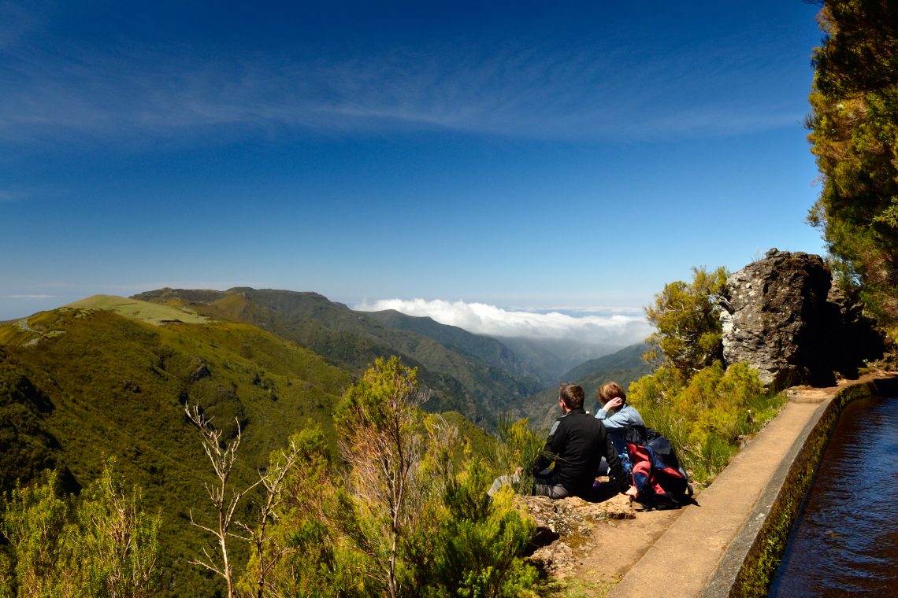
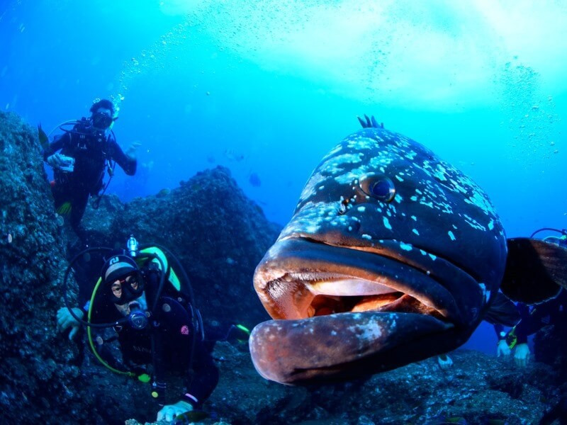

Trilho da Levada
Caminhe pelas famosas levadas e aprecie paisagens deslumbrantes.

Gastronomia Local
Experimente pratos típicos da Madeira em restaurantes locais.

Mergulho
Explore a vida marinha da Madeira com instrutores certificados.